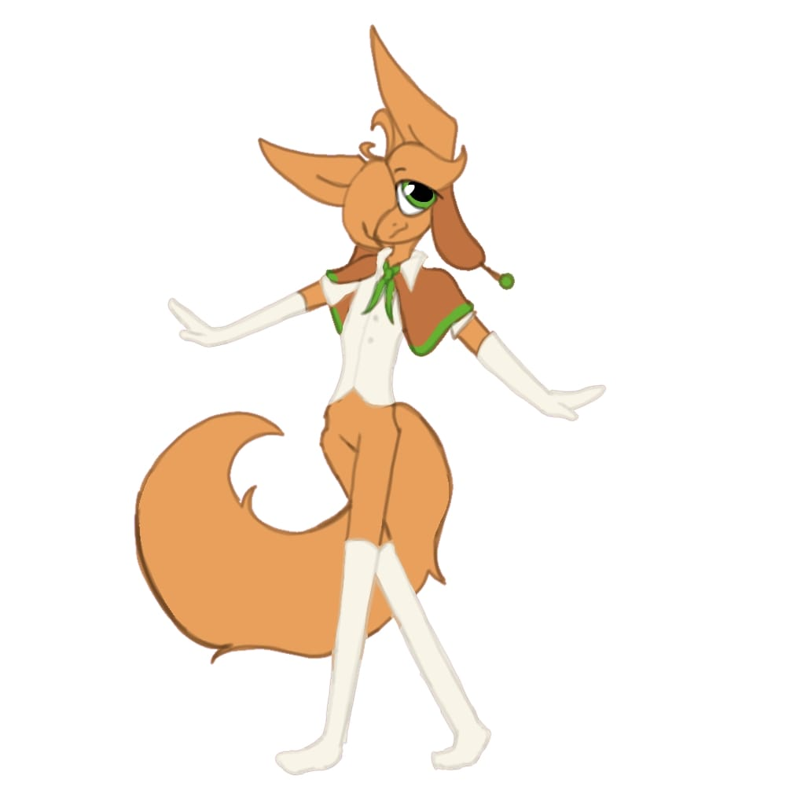

L
LLUCKY
Gato naranja — Esclavo de alto valor
LGato naranja — Esclavo de alto valor
Lucky es un gato naranja criado como esclavo de lujo desde los tres años, vendido a seis dueños distintos que lo usaron y lo lastimaron de formas diferentes. Delicado, educado y extremadamente amable, aprendió a sonreír incluso cuando estaba roto por dentro. Ahora vive con Ace y Proto-Kit, y por primera vez en su vida tiene amigos, una familia y esperanza. Sigue roto, pero ya no está solo.
Seleccionado
No seleccionado

Lucky nació en un criadero de esclavos y desde los tres años fue entrenado como esclavo de lujo: cocinar, servir té, tocar instrumentos, coser, maquillarse y ser perfecto en todo momento. A los ocho años fue vendido, y así comenzó una vida de seis dueños que lo usaron y lastimaron de formas distintas: el primero lo ignoraba y lo encerraba en armarios; el segundo lo usaba como accesorio para fotos; el tercero —el peor— le causó una lesión permanente en los pies, lo abusó y lo vistió con disfraces humillantes; el cuarto lo infantilizó; el quinto, una señora mayor, fue la primera en darle algo sin esperar nada a cambio; y el sexto fue Ace.
Para sobrevivir, Lucky aprendió a disociarse, a esconder sus emociones y a sonreír aunque estuviera roto por dentro. Los comentarios constantes sobre su peso le provocaron anorexia. Su único refugio fue Ferb, un conejo de trapo que cosió a los tres años y que cree que es un ángel que le habla y escribe sus memorias; nadie más puede verlo, pero ese peluche lo mantuvo cuerdo en medio del infierno.
Cuando Ace lo recibió como regalo, Lucky esperaba otro dueño cruel, pero Ace lo protegió, le dio espacio y le demostró cariño a su manera. Por primera vez se sintió seguro.